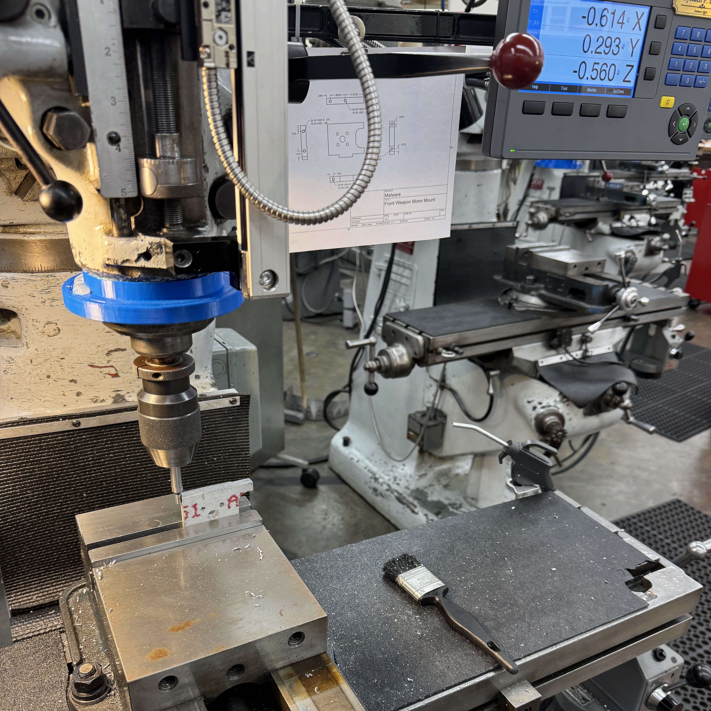

Project Contributions
Contributions

Participated in design reviews, providing critique. Machined tapped holes into parts as needed to support the build and save on manufacturing costs.
Contributions

Shortened hex standoffs to length by facing them on the mill. Created tapped holes for the drive axle standoff interface.
Contributions
Machining support focused on the weapon system: attempted to drill into the weapon using the drill press, then finished boring out and facing the weapon standoffs to spec. Also created a cylindrical bevel standoff from aluminum stock on the lathe.